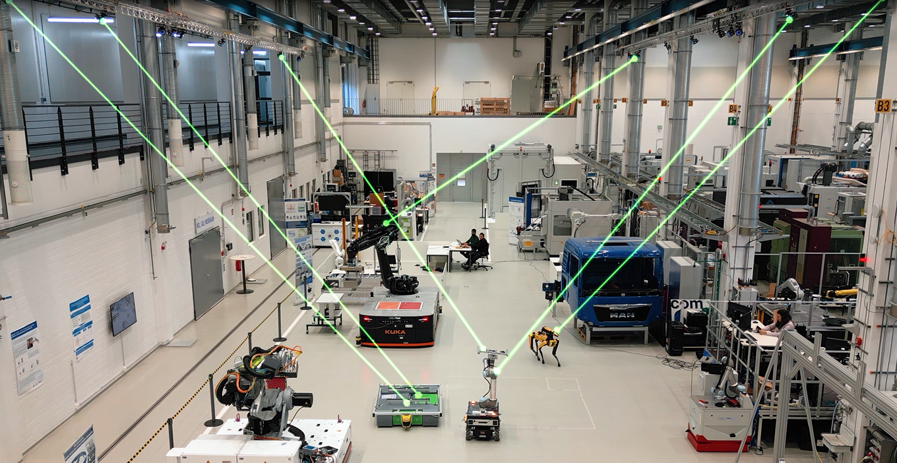

← Back to Projects
Autonomous Mobile Robot Controller
Advanced motion capture system for autonomous mobile robot navigation and control
Overview
This project is part of a Master's thesis at RWTH Aachen University, aiming to develop a controller for mobile robot navigation using a motion capture system. The system enables the robot to navigate and avoid obstacles autonomously, with pilot testing in simulation using ROS2 and Gazebo.
Key Features
- Motion capture-based navigation and obstacle avoidance
- ROS2 and Gazebo simulation environment
- Modular project structure with simulation and controller packages
- Real-time control and topic publishing for robot movement
- User input for start pose, goal pose, and velocity
Technical Structure
- Simulation Package (my_bot): Core application running in Gazebo, simulating the mobile robot in a predefined environment.
- Controller Package (my_controller): Contains the node responsible for publishing control topics to the robot.
Visual Results
Motion Capture System Visualization
Mobile Robot Navigation Demo
If the video does not play, download and open it with VLC or a modern browser.
If the video does not play, download and open it with VLC or a modern browser.
Mobile Robot: Real-World Test Footage
If the video does not play, download and open it with VLC or a modern browser.
If the video does not play, download and open it with VLC or a modern browser.
Mobile Robot: Extended Navigation Session
If the video does not play, download and open it with VLC or a modern browser.
If the video does not play, download and open it with VLC or a modern browser.
Technologies Used
ROS
Python
C++
SLAM
LiDAR
IMU
Motion Capture
Path Planning
Sensor Fusion
Project Impact
This project highlights the power of combining research and technology to solve real navigation problems. It’s a valuable resource for anyone interested in robotics, automation, or how robots can move safely and efficiently in dynamic environments.
GitHub Repository
Explore the complete implementation, documentation, and codebase on GitHub:
View on GitHub